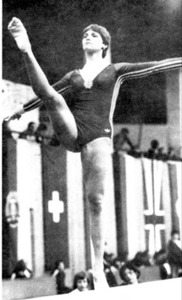

Andrea Horacsek (HUN)
1979 Champions All AA Bronze Medalist

Andrea was born on March 28, 1962. She trained in Budapest.
Competition Results
1976
Jr. Friendship Tournament (Druzhba): 6th UB
1977
Coca-Cola International:
11th AA
1978
GDR-HUN Dual Meet: 2nd Team, 9th AA
HUN Championships: 7th AA
Hungarian International: 4th AA
World Championships: 8th V
World Cup: 14th AA, 4th B, 5th V
1979
Champions All: 3rd AA
European Championships: 15th AA
1980
Cottbus International: 15th AA
1981
Blume Memorial: 9th AA
1982
Hungarian International: 10th AA
This page was created on August
11, 2009.
© Gymn Forum